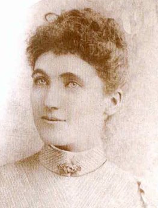
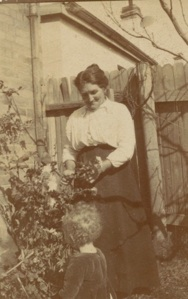
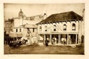

sarah leckey

We visited Mabel Leckey in 2005. She lived on Aughnish Island in Loch Swilly, Donegal. Mabel held the family stories of Sarah’s departure and over a cup of tea by the Rayburn she told us that Sarah had left Aughnish to marry  her fiancee in Australia, he was the son of the neighbours, the Greers who still live next to Sarah’s birthplace. The Leckey’s were quite poor . They worked in the linen industry as ‘scutchers’ and at the time Sarah left prices for linen were low. The industrialisation of the flax industry had resulted in unemployment and poverty for many of the small family concerns. It was a big shock to Sarah and her family when her fiancee did not show up to meet her in Australia. Dad had told me about this but not that he was a neighbour. He told me how courageous she was to then take herself to Sydney and run a boarding house. Dad also told me about the poverty of the family and that Sarah had collected seaweed to make money before she left Ireland. Unfortunately Dad died the year before we went to Ireland and he never learnt that we had found his grandmother’s family and the place that she had come from. He knew she came from Aughnish because he remembered the name on the house in Lithgow. In conversation I suggested she may have been Scottish. “Bullshit”, he said. “She was as Irish as Paddy’s pigs.” ... and so she was.
her fiancee in Australia, he was the son of the neighbours, the Greers who still live next to Sarah’s birthplace. The Leckey’s were quite poor . They worked in the linen industry as ‘scutchers’ and at the time Sarah left prices for linen were low. The industrialisation of the flax industry had resulted in unemployment and poverty for many of the small family concerns. It was a big shock to Sarah and her family when her fiancee did not show up to meet her in Australia. Dad had told me about this but not that he was a neighbour. He told me how courageous she was to then take herself to Sydney and run a boarding house. Dad also told me about the poverty of the family and that Sarah had collected seaweed to make money before she left Ireland. Unfortunately Dad died the year before we went to Ireland and he never learnt that we had found his grandmother’s family and the place that she had come from. He knew she came from Aughnish because he remembered the name on the house in Lithgow. In conversation I suggested she may have been Scottish. “Bullshit”, he said. “She was as Irish as Paddy’s pigs.” ... and so she was.

a trip to donegal
Lionel Lindsay. Boarding House, Charlotte Place, Sydney. 1911. National Gallery of Australia.


Sarah Leckie and John Stait in Lithgow about 1922


Sarah Leckie’s birthplace. Aughnish, Donegal.
What you should know
Sarah Leckey was born in Aughnish near Ramelton, Donegal, Ireland on 19 October 1861. She emigrated to Australia arriving in Rockhampton from Plymouth on the 30th July 1881 aboard the “Famenoth”. Sarah was travelling with neighbours from Donegal and was coming out to marry her fiancee who was also a neighbour named Greer from Aughnish. He had found someone else and didn’t turn up to meet her so she made her way to Sydney and ran a board

ing house in Charlotte Place, 13 Clarence Street, Sydney.John Edgar was boarding in her establishment and she married him on the 9th March 1894 at the Scot’s Church, Sydney. Sarah had 6 children, the only son died at birth. After her marriage the family lived in Sydney and then moved to Portland and then Lithgow where they built a house in Hill Street. It was named “Aughnish”. Sarah died on the 9th November 1941 at 57 Iandra Street, Concord West, a year after her oldest daughter Margaret had died.